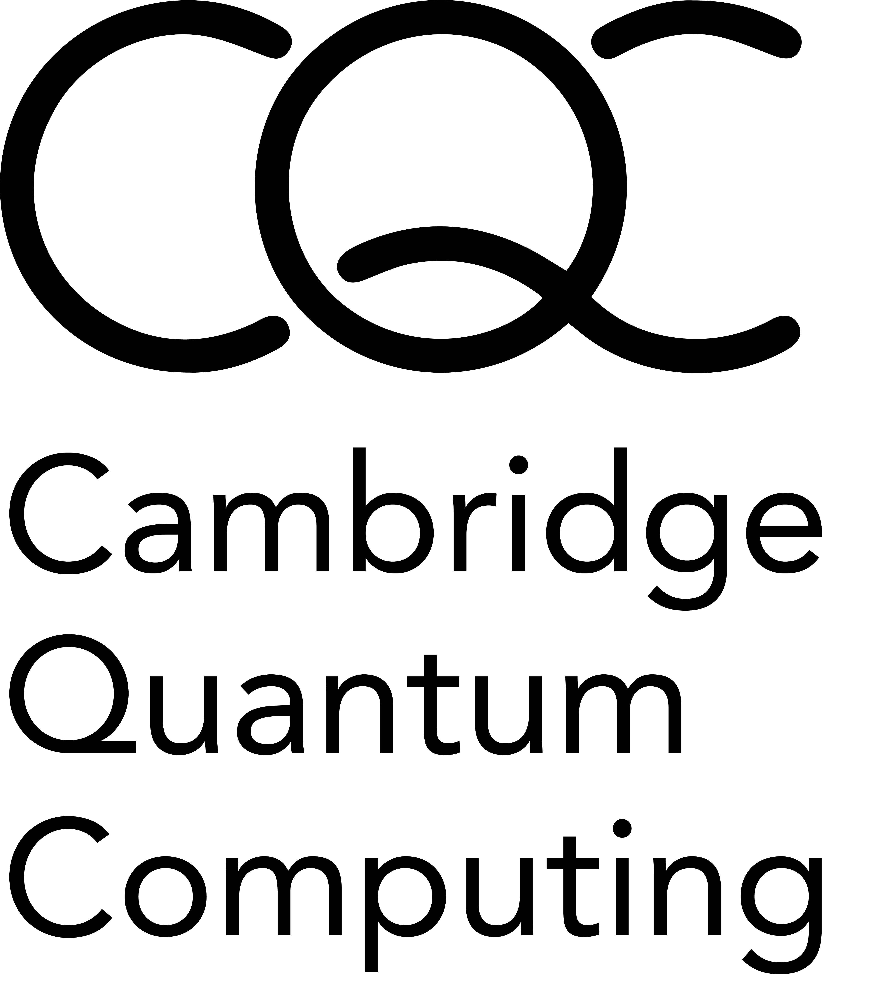

Qermit
{kind=link}
qermit is a python module for running error-mitigation protocols on quantum computers using pytket,
CQC’s python module for interfacing with CQC tket, a set of quantum programming tools.
qermit functions using the pytket Backend class, meaning qermit supports any of the
numerous providers pytket does.
qermit also provides easy composability of error-mitigation methods, meaning
it is practically straightforward to run an experiment with multiple forms of error-mitigation
where appropriate.
qermit is compatible with pytket 1~.
To install, run
pip install qermit
To use qermit, simply import the appropriate modules into your python code or into an interactive Python notebook.
Error-mitigation methods in qermit fit in to two distinctions, MitRes methods
that result in a modification of a distribution of counts retrieved from some
quantum computer, and MitEx methods that result in the modification of the
expectation value of some observable.
In their basic capacity, MitRes and MitEx objects will run experiments without error-mitigation.
from qermit import MitRes, CircuitShots
from pytket import Circuit
from pytket.extensions.qiskit import AerBackend
mitres = MitRes(backend = AerBackend())
c = Circuit(2,2).H(0).Rz(0.25,0).CX(1,0).measure_all()
results = mitres.run([CircuitShots(Circuit = c, Shots = 50)])
print(results[0].get_counts())
Counter({(0, 0): 25, (1, 0): 25})
The MitRes.run method takes a list of CircuitShots as an argument
and returns a pytket BackendResult object for each list element.
The MitRes and MitEx objects hold a graph of MitTask objects (a TaskGraph). A MitTask
object is a pure function that computes some basic step in a typical experiment. When the run function
is called, a topological sort is applied to the graph to order these tasks and then each is run sequentially.
In its default construction, a MitRes object will simply run each Circuit through the backend it is defined by.
mitres.get_task_graph()

Similarly, in its default construction a MitEx object will simply estimate the expectation of each observable
desired without applying any mitigation method.
from qermit import MitEx, AnsatzCircuit, ObservableExperiment, ObservableTracker
from pytket.pauli import Pauli, QubitPauliString
from pytket.utils import QubitPauliOperator
mitex = MitEx(backend = AerBackend())
qubit_pauli_string = QubitPauliString([Qubit(1), Qubit(2)], [Pauli.Z, Pauli.Z])
qubit_pauli_operator = QubitPauliOperator({qubit_pauli_String: 1.0})
ansatz_circuit = AnsatzCircuit(
Circuit = Circuit(3,3).X(0).X(1),
Shots = 50,
SymbolsDict = SymbolsDict()
)
experiment = ObservableExperiment(
AnsatzCircuit = ansatz_circuit,
ObservableTracker = ObservableTracker(qubit_pauli_operator)
)
mitex_results = mitex.run([experiment])
print(mitex_results)
[{(Zq[1], Zq[2]): -1.00000000000000}]
The MitEx.run method takes a list of ObservableExperiment objects as an argument. Each ObservableExperiment objects
contains the basic information required to estimate the expectation value of an observable; a state preparation circuit,
a dictionary between symbols and parameter values (where appropriate), a pytket QubitPauliOperator detailing the
operator being measured and used for preparing measurement circuits, and the number of shots to run for each measurement circuit.
Each experiment returns a QubitPauliOperator object containing an expectation value for each internal QubitPauliString. In its default
version, this is achieved by appending a measurement circuit for each QubitPauliString to the ansatz circuit and executing through
the pytket Backend the MitEx object is defined by.
mitex.get_task_graph()

See the Qermit user manual for an extended tutorial on using qermit, including
pre-defined error-mitigation methods and composing error-mitigation methods.
qermit currently provides the following error-mitigation schemes (under their commonly known names):
SPAM Correction
Frame Randomisation
Zero-Noise Extrapolation
Probabilistic-Error-Cancellation
Clifford Data Regression
Depolarisation-Factor-Supression-For-Nearest-Clifford
User Support
If you have problems with the use of Qermit or you think you have found a bug, there are several ways to contact us: - Write an email to tket-support@cambridgequantum.com and ask for help with your problem. - You can write a bug report on the CQC github with details of the problem and we will pick that up. You can also have a look on that page so see if your problem has already been reported by someone else.
API Reference:
- qermit.taskgraph
- qermit.mitres
- qermit.mitex
- qermit.utils
- qermit.mittask
- qermit.measurement_reduction
- qermit.spam
spam_mitres.gen_FullyCorrelated_SPAM_MitRes()spam_mitres.gen_UnCorrelated_SPAM_MitRes()full_spam_correction.gen_full_tomography_spam_circuits_task()full_spam_correction.gen_full_tomography_spam_characterisation_task()full_spam_correction.gen_full_tomography_spam_correction_task()full_spam_correction.gen_get_bit_maps_task()
- qermit.frame_randomisation
- qermit.clifford_noise_characterisation
- qermit.zero_noise_extrapolation
- qermit.probabilistic_error_cancellation
pec_learning_based.gen_PEC_learning_based_MitEx()pec_learning_based.gen_rebase_to_frames_and_computing()pec_learning_based.gen_run_with_quasi_prob()pec_learning_based.collate_results_task_gen()pec_learning_based.learn_quasi_probs_task_gen()pec_learning_based.gen_get_clifford_training_set()pec_learning_based.gen_label_gates()pec_learning_based.gen_wrap_frame_gates()pec_learning_based.gen_get_noisy_circuits()
- qermit.spectral_filtering
spectral_filtering.gen_spectral_filtering_MitEx()spectral_filtering.gen_result_extraction_task()spectral_filtering.gen_mitigation_task()spectral_filtering.gen_fft_task()spectral_filtering.gen_ndarray_to_dict_task()spectral_filtering.gen_inv_fft_task()spectral_filtering.gen_flatten_task()spectral_filtering.gen_reshape_task()spectral_filtering.gen_obs_exp_grid_gen_task()spectral_filtering.gen_symbol_val_gen_task()spectral_filtering.gen_wire_copy_task()spectral_filtering.gen_param_grid_gen_task()SmallCoefficientSignalFilterSignalFilter